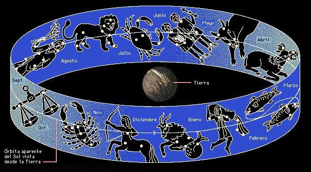

Astronomía en la antigüedad
La curiosidad de los pueblos antiguos con respecto al día y la noche, al Sol, la Luna y las estrellas les llevó a la conclusión de que los cuerpos celestes parecen moverse de una forma regular, lo que resulta útil para definir el tiempo y orientarse. La astronomía solucionó los problemas que inquietaron a las primeras civilizaciones, es decir, la necesidad de establecer con precisión las épocas adecuadas para sembrar y recoger las cosechas y para las celebraciones, así como de orientarse en las largas travesías comerciales o en los viajes. Véase Arqueoastronomía.
Para los pueblos antiguos el cielo mostraba una
conducta muy regular. El brillante Sol que separaba el día de la noche
salía todas las mañanas desde una dirección, el Este, se
movía uniformemente durante el día y se ponía en la dirección
opuesta, el Oeste. Por la noche se podían ver miles de estrellas que
seguían una trayectoria similar girando en agrupamientos permanentes
llamados constelaciones.
En la zona templada del hemisferio norte comprobaron que el día y la noche no duraban lo mismo a lo largo del año. En los días largos, el Sol salía más al Norte y ascendía más alto en el cielo al mediodía; en los días con noches más largas el Sol salía más al Sur y no ascendía tanto. La observación de las estrellas que aparecen por el Oeste antes del ocaso o por el Este antes del amanecer mostraba que la posición relativa del Sol cambia de forma gradual.
Estudios posteriores pusieron de manifiesto que el Sol, la Luna y cinco planetas brillantes giran alrededor de la esfera de estrellas dentro de un estrecho cinturón llamado zodíaco. La Luna atraviesa el zodíaco con rapidez, adelantando al Sol una vez cada 29,5 días, periodo conocido como mes sinódico. Los que observaban las estrellas en la antigüedad intentaban fijar los días e incluso los meses y los años en un sistema de tiempo coherente, o calendario. Como ni un mes completo ni un año completo contienen exactamente un número entero de días, los creadores de calendarios asignaban a los sucesivos meses o años diferente número de días, que sacando una media, se aproximara al valor real. Así pues, el calendario moderno incluye 97 años bisiestos en cada periodo de 400 años, de modo que el número medio de días por año sea de 365,2425, muy próximo a 365,24220, el determinado astronómicamente.
El Sol y la Luna siempre atraviesan el zodíaco de Oeste a Este. No obstante, los cinco planetas brillantes: Mercurio, Marte, Venus, Júpiter y Saturno, que también se mueven hacia el Este sobre el fondo de las estrellas, tienen un movimiento hacia el Oeste, o retrógrado, de variada duración. Así pues, los planetas parecen seguir un recorrido hacia el Este de manera irregular, con curvas periódicas en sus trayectorias. Desde la antigüedad se ha pensado que los acontecimientos celestes, en especial los movimientos planetarios, tenían que ver con el destino de las personas. Esta creencia, llamada astrología, fomentó el desarrollo de esquemas matemáticos para predecir los movimientos planetarios y favoreció el progreso de la astronomía en el pasado.

Los astrónomos percibieron que el Sol realiza un recorrido anual por la esfera celeste, parte del cual se representa en la imagen con la banda azul. Los astrónomos asociaban las fechas con las constelaciones en este estrecho cinturón (conocido como zodíaco), y asignaban a cada una la fecha en la que el Sol pasaba por ellas. El astrónomo del siglo II Tolomeo dio nombre a los doce signos del zodíaco: Aries, Tauro, Géminis, Cáncer, Leo, Virgo, Libra, Escorpio, Sagitario, Capricornio, Acuario y Piscis. El Sol pasa por las constelaciones zodiacales en fechas diferentes a las marcadas tradicionalmente.